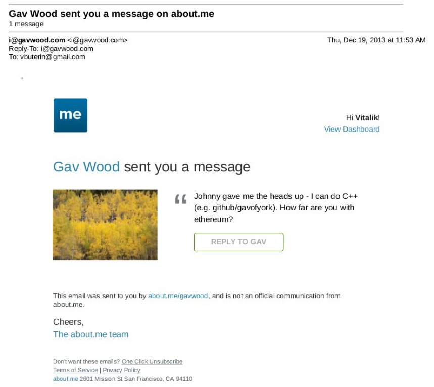

以太坊协议的发展历程
Vitalik Buterin
Sep 14, 2017

虽然在两年前，以太坊当前协议背后的想法就已经基本稳定下来，但以太坊并不是一出现就形成了现在的概念和规模。在区块链推出前，该协议经历了许多重大的演变和设计决策。本文回顾了该协议从开始到推出所经历的各种演变历程；并且回顾了执行Geth、 cppethereum、pyethereum和EthereumJ协议时所做的无数工作以及以太坊生态系统中应用和商业的发展历史。
此外还有Casper的历史和分片(sharding)研究。虽然我们可以写更多的博文探讨Vlad、Gavin、我自己及其他人的不同想法，抛弃了包括“证明PoW（工作量证明）”、中枢辐射链、“超立方体”、影子链（Plasma的前身）、链性纤维和Casper的不同迭代及Vlad在共识协议和特性的行为激励上迅速变化的理性思考，但这些东西非常复杂，一篇博文恐怕讲不清楚，所以我们把它留到现在来讲。
首先我们先从以太坊的最初版本讲起，最初，以太坊还不叫“以太坊”。2013年10月访问以色列时，我与万事达币（Mastercoin）团队相处了很长时间，甚至向他们提出了一些功能性建议。在进行了十几次与他们的工作有关的谈论后，我向该团队提出了一个建议，在不增加同等大小和复杂的系列功能时使他们的协议更加普遍并且能够支持更多类型的合约。
https://web.archive.org/web/20150627031414/http://vbuterin.com/ultimatescripting.html

我们注意到这与后者相距甚远，是一个更广泛的以太坊版本：该版本已经专注于万事达币所在的领域，即双方合约，在该合约中，A方和B方进行投资，之后根据合约上规定的一些公式拿到更多的资金（如 规定“如发生X事件，所有钱归A，否则所有钱归B”），其脚本语言并不是图灵完备的。
万事达币团队令人印象深刻，但他们想全面兼顾，不想放弃任何正在从事的事情，专注于这个方向，我越来越确信这是一个正确的选择。现在来看版本2，circa December：
https://web.archive.org/web/20131219030753/http://vitalik.ca/ethereum.html

在这里你可以看到一个大量重构的结果，很大程度是由于11月份在旧金山散步时我意识到智能合约可能会完全大众化。脚本语言仅是描述双方关系术语的一种简单方式，而合约本身就是成熟的账户，具有支持、发送和接收资产的特性，甚至进行永久储存（以前，永久储存被称为“记忆”，唯一的暂时性“记忆”是256个寄存器）。语言可以按照我的意志从堆栈式的机器转换到寄存式机器；它除了看起来更复杂之外，我对它几乎没有什么异议。
除此之外，我们还注意到现在有一个内置费用机制：

在这一点上，以太币实际上是gas；每一个单独的计算步骤完成之后，一项交易发起的合约余额将会减少一些，如果该合约的资金用光，那么执行也将终止。要注意到，这种“接收人付款”机制意味着该合约本身必须要求发送者向合约支付一笔费用，如果没有这笔费用支出，合约则立即退出；协议分配16个免费执行步骤作为补贴，使合约能拒绝不付款的交易。
这个时候，以太坊合约完全是我自己的创造。然而从这里开始，新的参与者开始参与进来。到目前为止，协议方最突出的是Gavin Wood，他在2013年12月通过about.me发信息联系到我。
Go client（那时称为“ethereal”）的主要开发者Jeffrey Wilcke也联系到我并大约在同一时间开始编码，相比研究协议，他的贡献更多是在客户开发方面。

"嘿Jeremy, 很高兴你对以太坊感兴趣..."
Gavin最初做出的贡献是双重的。首先，你可能注意到初始设计中的合约调用模型是非同步的：虽然合约A会对合约B创建一个“内部交易”（“内部交易”是Etherscan的行话；最初，他们被称为“交易”，之后称为“信息调用”或“调用”），内部交易要到第一个交易全部执行完成后才会开始执行。这意味着交易将不会使用内部交易作为从其他合约获取信息的一种方式；唯一的方式就是EXTRO操作代码（如一个可以用来读取其他合约储存的SLOAD），在Gavin等其他人的支持下，这些在后来也被清除了。
执行初始规范时，Gavin自然同步执行了内部交易，甚至没有意识到意图不同，也就是说，在Gavin的执行中，当一个合约调用另一个合约时，内部交易就会立即执行，一旦执行完成，VM就会回到创建内部交易的合约并转到下一个操作码。这种方法对我们来说似乎太高级，所以我们决定使之成为规范的一部分。
第二，他和我讨论后（在旧金山散步时讨论的，所以具体细节已经随风而逝，很可能一或两个副本存在NSA的深度档案中），该交易费用模型进行了重构，从“合约支付”方式转移到“发送者支付”方式，并切换到gas架构。并不是每个交易步骤都会立即消耗一点以太币，交易发送者为交易付费，并分得一些“gas”（大约是计算步骤的计数数量）和来自gas限额的计算步骤。如果一笔交易用完了gas，该gas仍会被收回，但整个执行过程将会还原；这似乎是最安全的做法，因为它将合约之前担心的一整套“部分执行”攻击删除了。当一项交易执行结束时，任何未使用的gas都会被退回。
Gavin最初将以太坊视为一个构建可编程资金的平台，以区块链为基础、可以持有数字资产的合约，并根据预先设定的规则将其转移到通用平台。从最开始重心和术语的灵活改变，到后来随着对“Web 3”整体的逐步重视，这一影响变得越来越强大，“Web 3”整体将以太坊看做是一系列去中心化的技术的一部分，另外两个是Whisper和 Swarm。

也有人在2014年初提出了一些改变。在Andrew Miller等人提出这一想法后，我们最终回到了基于堆栈的构建。


Charles Hoskinson提出了从比特币的SHA256到更新的SHA3（或者更确切的说，是keccak256）的转变。虽然有段时间存在争议，通过与Gavin、Andrew等其他人的讨论，我们得出，栈上的数值大小应该限制在32字节；无限大小的整数也被考虑在内，但问题是要算出加、乘等其他操作需要花费的gas太难了。
2014年1月我们头脑中最初的挖掘算法是叫做Dagger的奇异设计。
https://github.com/ethereum/wiki/blob/master/Dagger.md

Dagger以应用在这一算法的数学结构“有向无环图”（DAG）命名。这一想法就是，每N个区块，每一新的DAG将从一粒种子中伪随机生成，DAG的底层是由占用数个千兆字节容量的节点组合而成的。然而，在DAG中产生任何单独数值要求计算几千个词条。一个“Dagger计算”涉及到从底层的数据集的随机位置中获得许多数值，并将它们散列在一起。这意味着一种快速进行Dagger计算的方式，已经有了数据存储，缓慢但非集中的存储方式，从你需要一开始就获得的DAG中重新生成每个数值。
这一算法的目的是为了拥有 “存储硬度”的特性，与当时受欢迎的算法同样，如Scrypt，但仍然保持轻客户端友好方式。矿工们将利用快速方式，这样他们的挖矿过程将被存储带宽所限（这一理论认为，用户级的RAM已经被高度优化了，所以使用ASICs来进一步优化会变得困难），但轻客户将使用无内存但更加缓慢的版本进行审核。最快的方式也许只花费几微秒，缓慢但无存储的方式也许只花费几毫秒，所以对轻客户来说仍然是可行的。
从这里开始，这一算法将在以太坊发展过程中经历好几次改变。我们所经历的紧接着的想法就是“适应性的工作量证明”；在这里，工作量证明将涉及执行随机挑选出的以太坊合约，一个很好的理由可以解释为何这会与ASIC不兼容：如果开发ASIC，相互竞争的矿工将会有动力创建和发布许多ASIC不擅长执行的合约。一般计算中不存在ASIC这样的东西，只有一个CPU，所以我们可以使用这种对立的激励机制进行工作量证明，证明本质上是正在执行一般性的计算。
其中一个简单的原因是：远距离攻击。攻击者可以从区块1开始一个链，用简单的合约将其填满，他们可以为这种合约创建专门的硬件，并快速取代主链。所以……不得不重新开始。
下一个算法名为随机线路（Random Circuit），在该谷歌文件中有所描述，由我和Vlad Zamfir提出，由Matthew Wampler-Doty和其他人等进一步分析。该想法是为了在挖掘算法内部模拟一般目的的计算，这次是通过执行随机产生的线路。证明基于这些原则的东西是无效的，还没有找到有力的证据，但2014年我们接触的电脑硬件专家对此十分悲观。Matthew Wampler-Doty提出了基于SAT解决工作量证明解决办法，但最终遭到否决。
最终，我们又回到原点，即名为“Dagger Hashimoto”的算法。这一算法有时简称为“Dashimoto”，借鉴了Hashimoto的许多想法，Hashimoto是由率先开创“I/O bound 工作量证明”概念的Thaddeus Dryja所提出的工作量证明算法，在挖矿速度上首要的限制因素不是每秒的哈希数，而是每秒RAM访问的兆字节。然而，它将这一点与Dagger的轻客户友好型DAG产生的数据集概念相结合。在经过我、Matthew、Tim等其他人许多轮轻微调整后，这些想法最终汇集到我们现在称之为Ethash的算法中。

到2014年夏天，这一协议已经在很大程度上稳定下来了，但工作量证明算法还没稳定，直到2015年年初工作量证明算法才到达Ethash阶段，另外就是以Gavin的黄皮书形式存在的半形式化规范还未稳定。

2014年8月，我开发并引进了 the uncle mechanism（叔块机制），这一机制使以太坊的区块链的区块时间更短、缓解集中化风险的能力更强。这作为PoC6的一部分被采用。
与Bitshares团队讨论后，我们考虑添加堆作为一级数据结构，虽然我们最终因时间不足没能做这件事，后来安全审计和DoS攻击显示，要想实现安全操作，实际要比想象困难得多。
九月，Gavin和我计划在未来两个月对协议设计做出两项重大改变。首先，在状态树和交易树旁边，每个区块都将包含一个“收据树”。收据树将包含交易创建的记录的哈希，及中间的状态根。记录将允许交易创建存储在区块链上的“输出”，并可以访问轻客户端，但不可访问未来的状态计算。这可以用来使去中心化的应用更容易查询发生的事件，如代币交易、购买、创建和填充的交易指令、正在启动的拍卖等等。
此外还考虑到其他的一些想法，如在交易的整个执行轨迹外创建梅克尔树来证明任何事情；选择记录是因为它在简化性和完整性之间做了很好的平衡。
第二个是“预编译”的想法，这一想法使复杂的加密计算可以在不必处理EVM费用的情况下在EVM中使用。我们也经历了更多关于“本地合约”的伟大构想，如果矿工可以优化执行一些合约，他们可以投票降低gas的价格，所以大多数矿工可以更快速执行的合约自然gas价格更低；然而，所有这些想法被否决的原因是我们没有想出一种加密成本低又安全的方式执行这样的事情。攻击者总是可以创建一个执行一些陷阱加密操作的合约，将接口分配给自己和他们的朋友，以便他们更快地执行这个合约，然后再投票降低gas价格，并将其用于DoS网络。相反，我们倾向稳妥的方式，在协议中简单指定的数量较少的预编译，用于散列和签名方案等常用操作。
Gavin也是最初提出开发“protocol abstraction”想法的关键人物，protocol abstraction作为合约的许多部分，比如以太币余额、交易签名算法、随机数等进入协议。理论性的最终目标是达到一种状态，在这种状态下，整个以太坊协议可以使函数调用（function call）到有预先初始状态的虚拟机中。使这些想法进入初始Frontier版本，时间不足，但预计会通过Constantinople改变、Casper合约和分片的规范逐渐开始整合。
这些全部都在PoC7中实行；在PoC7之后，除了一些小的变动外，该协议并未发生多少改变。虽然在一些案例中重要，但细节可以通过安全审计得到。
2015年初，Jutta Steiner等人开始组织预推出安全审计，包括软件编码审计和学术审计。最初是由Gavin Wood和Jeffrey Wilcke分别带领，在C++和Go implementations上进行软件审计，在我的pyethereum执行中还进行着一项小的审计。在两项学术审计中，其中一项由Ittay Eyal执行，另一项由来自Least Authority 的Andrew Miller等人执行。Eyal的审计为协议带来了轻微的改变：一条区块链的所有难将不包含叔块链。The Least Authority audit更关注智能合约和gas成本及帕特里夏树。这次审计使协议发生了几项改变。其中一个小的改变是使用sha3（addr）和sha3（key）作为trie keys，而非直接的地址和key；这使得在trie上执行最坏情况的攻击变得更加困难。

我们讨论到的另一重大事件是gas 限额投票机制。在这时，我们已经开始担心我们察觉到的关于比特币区块大小的争论如我们预想的一样，无法取得大的进展，我们希望以太坊有一个更灵活的设计，可以随时间的推移根据需要来调整。但我们面对的挑战是：什么是最合适的限额？我最初的想法是做一个动态额度，目标范围是实际gas使用量的长期指数移动平均值的1.5倍，所以长期看来，平均区块将占全部的三分之二。然而，Andrew表示在某些方式上是可以利用。具体来说，希望提高限额的矿工可以将交易包含在他们自己的区块上，这消耗大量的gas，但处理起来很快，从而始终为自己免费创建完整的区块。因此这个安全模式相当于仅仅让矿工为gas限额投票，至少在积极的方向上是这样的。
我们没能想出一个更可能取得成功的gas 限制策略，所以Andrew推荐的解决方案是在gas 限额上让矿工明确投票，并在1.5xEMA规则投票中采取默认策略。但问题是我们仍然不知道设置最大gas 限额的正确方法，任何特定方法遭遇失败的风险似乎比矿工滥用投票权的风险更大。因此，我们最好让矿工在gas限额上投票，并接受这个限额可能太高或太低的风险，以此获得灵活性以及可以使矿工互相合作并根据需要快速上调或下调gas限额。

在Gavin、Jeff和我的小型黑客马拉松之后，PoC9于三月份推出，并打算让其成为最终的概念证明。Olympic测试网运行了四个月，使用预计用在活网中的协议，以太坊的长期计划最终得以确立。Vinay Gupta写了一篇名为“以太坊推出过程”的博文，博文描述了以太坊活网发展预计的四个阶段，并给出了目前四个阶段的命名：Frontier、Homestead、Metropolis 和 Serenity。
Olympic运行了四个月。最初两个月，在不同的执行中发现了许多漏洞，也出现了共识失败。但在六月前后，该网络明显稳定下来。七月，我们决定要在发布后进行编码冻结，并在7月30日进行了发布。